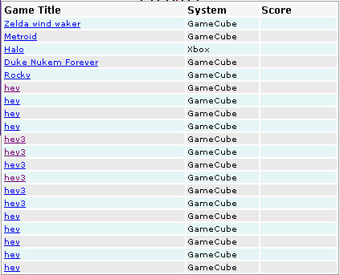
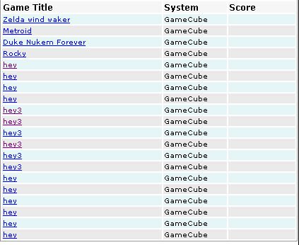
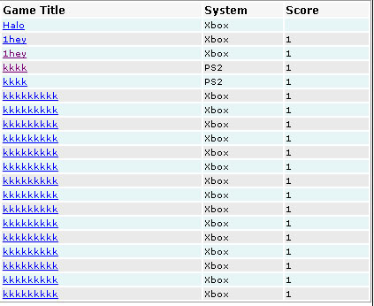

·
Azlist 2
Over View: Azlist2 is an updated version of azlist from ncaster 1.6.5 this
new version features support for entity 2, Custom Filters & custom fields
which effectivly makes it one of the most flexable indexing systems avaliable.
Tip: Azlist is very powerfull at filtering by custom fields this abbility enables you to display what the user wants, you can apply up to 15 filters to one given display and one of those filters can contain unlimited match strings.
-
Features.
- Editing Templates.
- custom filters
- Use full tips.
Features .
-
Custom fields now supported with in azlist styles.
- You can now set a table start and table end template.
- Custom field filtering is now supported.
- Entity2,PHP scripting is also supported.
Editing templates .
Azlist
templates are stored in file they can be found in admin/ex_templates/azlist
folder.
There is 4 templates they are broken up to make them easier to manage this
is how they are broken up.
aztemplate.tpl
: This is the first template printed, it should contain a list of all the
letters you can select e.g a|b|c ect all linked to the apprite sections.
tableend.tpl : the end of the table tag in most cases this
will be just </table> however if you want to add additional html at
the bottom of the table end please feel free to do so.
tablestart.tpl : is the table start, this can contain all
the headers for all the table cells.
template.tpl : template.tpl this is the template that gets
repeated over and over to form your azlist index, this template can contain
entity code.
All
templates can contain.
* Tags (but limited)
only Template.tpl can contain.
* Entity
* tags (all including custom)
* PHP if enabled
Custom filters .
one of ncasters very unquie features is the ability to filter by custom fields lets look at a index of results by azlist.

Here
we have a list of games each have there own console system but what if we
wanted to just show the results that where on the gamecube system ?
If we apply f_system=Gamecube to the url we can show just the systems with
gamecube heres a look at the new list.

Much
beater, we could also apply a dubble value for if we wanted to match 2 systems
but by the same custom field by doing
f_system=Ps2/Xbox

Easy enought ?
Usefull
tips .
1. Entity allows you to apply dynamic effects on your azlist cells, use it
to create profesional looking tables (see below)
| 1 | My shoping list |
| 2 | My car photos |
| 3 | websites |
2. Use custom filters, custom filters enables you to filter content for your user to show the least results while displaying the most information the user wants, to use custom filters is easy from the url just add f_yourcustomfieldname=value to match.